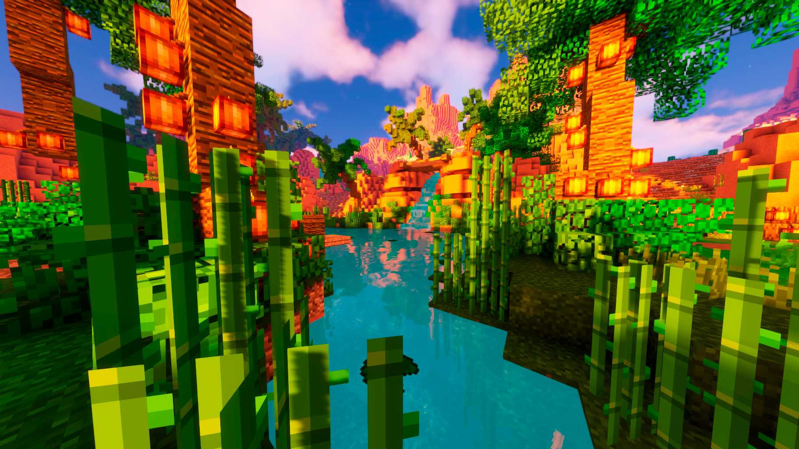
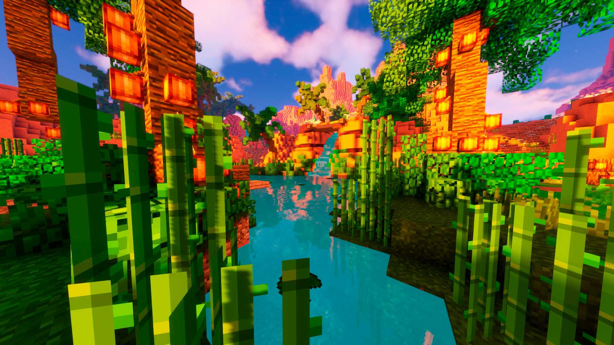

TAUNHAI
TAUNHAI is a powerful cracked client for Hypixel Skyblock that comes with unique pathfinding tools and anti-ban safety.
- 🌾 Farming Scripts: Wart, Crops, Pumpkin, Cactus, Cocoa, Mushroom, Sugarcane
- 🧑‍🌾 Garden Tools: Pests remover, Visitors automation, Farm Builders
- ⚔️ Combat Scripts: Ghost, Zealot (Ranged/Melee), Graveyard, All Slayers
- 🌳 Foraging: Park, Hub, 2x2 Island (Rod Swap, Failsafe, Auto-sell)
- 🣠Fishing: Quick, Worm, Location-based, Full Auto Modes
- 🧹 Misc Macros: Plot Cleaner, Cobblestone, Alchemy, Anti-AFK, Harp
- 🧠Mini/QOL Scripts: Fairy Souls, Auto Scribe, Auto Hack, GUI Tools
- 🔒 Hydra Anti-Staff: Hyper-realistic response + check detection system
- 📈 Scripting Sessions: Logs, earnings, screenshots, dashboard view
- 🤖 Remote Control: Discord + Web Dashboard Control
- 👀 Humanized Movement: Sensitivity-based natural pathing
- 💻 Menu & HUD: Customizable, beautiful UI with fluid UX
- 📊 Profit Tracker: Earnings, skill XP, runtime statistics
- 💸 Auto-Sell: Dynamic NPC or Bazaar based selling
- 🃠Anti-Stuck & Rewarper: Fast exit, spawn rewarp support
- 💠Best-in-class Failsafe: Handles warps, disconnects, errors
- 🖱️ Mouse Tools: Lock, Switcher, Block Check, Controller


 
